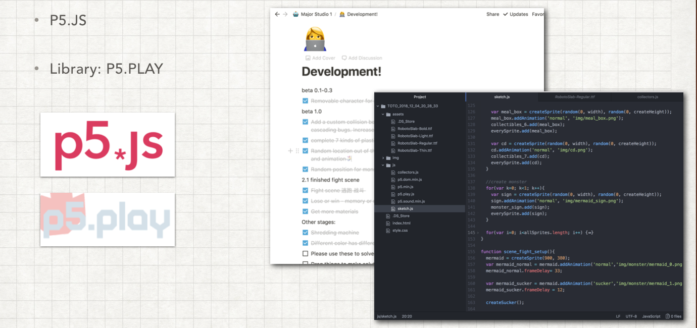

The game is about the player finding an impossible creature in 2050 and trying to protect it from the dangerous environment, by collecting and recycling the plastic waste and turning it into precious resources and even a device to help the creature. The final device doesn't have to be practical, but needs to solve problems in a creative way.
This is a personal project . I designed the storytelling, all the arts, and also developed the game in p5.js.
We often hear about the importance of protecting the environment. However, only a few people take further actions. Thus, my final project is trying to discuss the way of motivating people to care more about environmental problems.
To narrow down the topic, I chose the problem of plastic reducing and recycling. After analyzing the existing ways of promoting and educating people about plastic pollution, I found out that they often use negative information to scare or threaten people, such as ugly pictures or scary predictions. So I was wondering: if I could make something positive and fun would this motivate people more to care about and act on recycling?
I want to build a game that can motivate people to care more about plastic pollution in a positive way.
Through the recommendation of my professor, I participated in an event held by Precious Plastics. On their official website, they defined themselves as “a global community of hundreds of people working towards a solution to plastic pollution”2. This community shared much free knowledge which was intended to allow the public to build their machines for recycling plastics and making new products.
The whole process would be building machines, collecting raw materials, sorting, shredding them, melting them, and then creating new products. Other people in the community could use these machines and go through the whole process for free. People in the community believed that plastic shouldn’t be regarded as waste, but valuable resources.
I decided to use research and interviews to let users choose which ones sound to make them motivated and which sounds more interesting. My goal is to choose the most interesting and motivating 1-2 of the games as the theme of the game, and recognise the content that users think is tedious but essential, and strive to make them interesting and positive in the future.
The method is that I have listed nine representative statements about plastics. Then print them on a small card. They are then asked to classify the cards into four quadrants. The more you go to the upper right corner, the more interesting and motivating; the lower the left corner, the more boring and unmotivated.
In the end, I chose Marine Creature and Creating by Yourself as my game theme. Recycling is also essential, so I hope to integrate them in the game.
It is normal midnight. An old sea turtle climbs on the shore. It tries its best to find a way through the garbage piles and then comes to a little clean space on the coast. And then, it goes back to the sea, leaving a turtle egg in the silence of the sea. After a while, a giant bird appears. Oh, it’s not a bird but a recycling aircraft. It pours tons of trashes on the shore, filled the only blank space, then leaves carefully.
You wake up from your dreams. Everything in that dream is unbelievable. Now in 2050, almost everyone's refuge has a fast-moving aircraft, a house that is as intimate as the housekeeper and automatically adjusts the indoor parameters of the room. However, people are no longer going out.
Scene one and Scene two are combining animation and conversations.
You are trying to gather different materials on the beach. Suddenly, there is a mutated plastic monster appearing in front of you. You must defeat it. However, after the fight, it just leaves a warm memory, that it once was loved by people.
Using the plastics that you have collected, finally, you can create your device to help the baby sea turtle to survive in this world. Also, you can post your creation on the website, so that other players can see the smart solution.
This user test is used to determine the final form of the creative making process. Because the purpose of the game is to let the player experience the plastic recycling process and finally uses the recycled plastic to create interesting machines so that he can help the sea turtle. However, what kind of game mechanism could be used to motivate players to collect plastic and applied materials? This is the problem needs to be solved.
First, ask the player to choose the problem they want to solve/or ask a new question. Then help the little turtle solve the problem by making a thing. This thing should be creative, imaginative and radical. I tested jigsaw puzzles to build out an idea, or drawing with a brush, and then ask users to generate a sentence to describe the innovation.
The crayon ones were very detailed and can adequately express the player's thoughts, but the degree of freedom was too high; Things made with jigsaw puzzles are too abstract and visually sound, but players must use the power of language to explain them.
So I was wondering if I could combine these two ways of creating, with some degrees of freedom, but also easy to express thoughts. In that case, it can simulate the use of plastic to make things, which is similar to Precious Plastic and recycled plastic 3D printing.
I used P5.JS to develop my game. P5.JS is “a JavaScript library that starts with the original goal of Processing, to make coding accessible for artists, designers, educators, and beginners, and reinterprets this for today's web.” I also used the library “p5.play” to achieve my goal as building a game on a website. Moreover, for now, the project is still in progress.
Combine different stages to a whole game.
Fix bugs.
Connection through the game.
Explore more forms of the game.